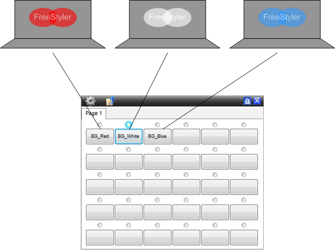
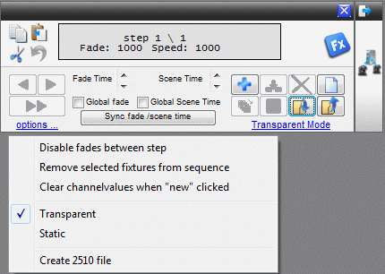
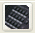
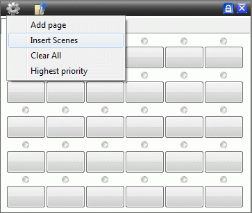

Simple Steady Light
Tutorial Help: I just want to have some simple light control.
Don’t know what to call this tutorial.
From time to time a simple control is needed. This could be where some steady light on a theatre scene, light on or behind a band or light on a logo for a mobile disco is needed. And to control it just by pressing a button. The possibilities are many.
Common for these applications is that they only have one scene and the control of these scenes are to be simple. Things like cues and submasters are not the optimal choice or the wanted solution.
In this case the override buttons are ideal. The override buttons playback only one scene in a sequence and if there are more scenes or steps, then only the first scene is played.

The two steps are: simply to record a scene with the sequence editor, and then attach this sequence to a override button.
Example:
“Open” the Sequence editor. It can be found in the “Toolbar” ,

Set the lights as wanted, for example: Red light behind the stage, position the moving head and so on.
Don’t press “+”. It will add an extra step and in this case it is one setting and thereby one scene only.
Determine if it is all parameters for all fixtures that are to be recorded, or if it is just the selected fixtures with selected parameters. In a theatre it may be the settings of all lights that are to be recorded so it is a scene with all lights that are recorded. In the case of a band, where there are some moving light in the front, it may only be the steady lights in the back that are to be recorded.
If it is all parameters that are to be recorded then the recording mode has to be “Static” and in all other situations it has to be in “Transparent” mode. This transparent / Static mode and can be set in the options in the Sequence editor.
Note: With scenes on override buttons the shift from one scene to an other will appear instantly. It will not fade softly from one setting into an other.
“Save” the sequence.
“Open” the Override Button panel and insert / attach the sequences to the buttons.
Can be found in the “Toolbar” 

With the Override button there are some option that can be selected. “Highest Priority” sets the override buttons to the determining setting. The override buttons will then override manual fixture settings, cues and so on. As the name says: it overrides everything.
Additionally there are some options for each button that can be set, like “Flash button”. See: Override buttons.
Note that the override buttons can be used together with the Cues / Submasters so it is possible to have some steady light and some that are alive.
{kind=link}
{kind=link}
{kind=link}
{kind=link}
{kind=link}